28 equations — 28 machine-verified, 0 flagged. Green = verified, amber = flagged (still shows best LaTeX + source crop).
| # | ID | Status | Rendered (KaTeX) | Source crop (PDF) |
|---|---|---|---|---|
| 1 | II-8-1 | agreed_gt | $$T_r = \frac{t}{1 - P(\hat{H}_s)}$$ | 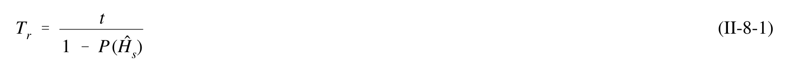 |
| 2 | II-8-2 | agreed_gt | $$P_e = 1 - \left(1 - \frac{t}{T_r}\right)^{\frac{L}{t}}$$ | 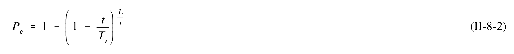 |
| 3 | II-8-3 | agreed_gt | $$U_r = \overline{U}_m + 0.78 \,\sigma_m \,[\ln (12T_r) - 0.577]$$ | 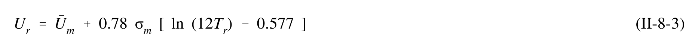 |
| 4 | II-8-4 | agreed | $$\sigma_{rm} = \sqrt{0.49 + 0.89 \ln (12 \bar{U}_m) + 0.67 [\ln (12 \bar{U}_m) - 0.577]^2} \cdot \frac{\sigma_m}{\sqrt{N_m}}$$ | 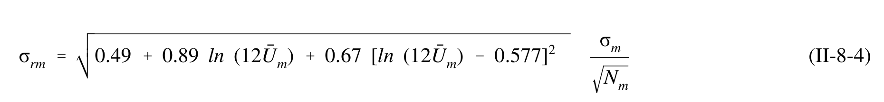 |
| 5 | II-8-5 | single_verified | $$20, 22, 24, 23, 22, 24, 25, 22, 23, 21, 22, 23, 20, 21 m/s$$ | 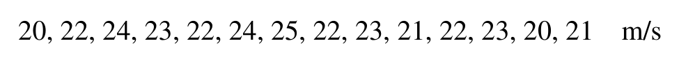 |
| 6 | II-8-6 | single_verified | $$U_{25} = 25.5\ \text{m/s}\quad (10-\text{min average})$$ | 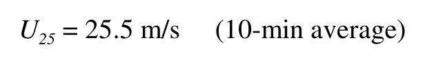 |
| 7 | II-8-7 | single_verified | $$U_{50} = 26.3\ \text{m/s}\quad (10-\text{min average})$$ | 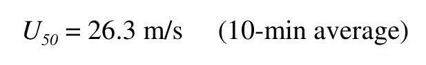 |
| 8 | II-8-8 | single_verified | $$U_{25} = \bar{U}_m + 0.78\sigma_m[\ln(12\times25) - 0.577] = \bar{U}_m + 4.00\sigma_m = 17.50 + 4.00 \times 3.32 = 30.8 \text{ m/s}$$ | 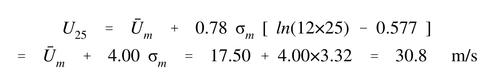 |
| 9 | II-8-9 | single_verified | $$U_{50} = \bar{U}_m + 0.78\sigma_m[\ln(12\times50) - 0.577] = \bar{U}_m + 4.54\sigma_m = 17.50 + 4.54 \times 3.32 = 32.6 \text{ m/s}$$ | 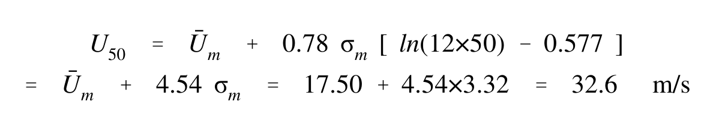 |
| 10 | II-8-10 | agreed | $$\sigma_{rm} = \sqrt{0.49 + 0.89 \ln(12\overline{U}_m) + 0.67 \left[\ln(12\overline{U}_m) - 0.577\right]^2} \left(\frac{\sigma_m}{\sqrt{36}}\right)$$ | 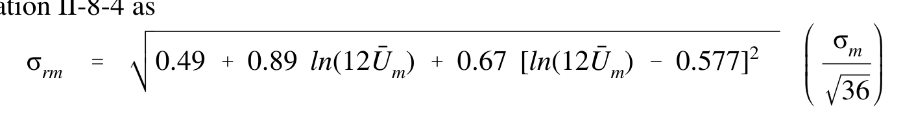 |
| 11 | II-8-11 | agreed | $$= \sqrt{0.49 + 0.89 \ln(12 \times 17.50) + 0.67 [\ln(12 \times 17.50) - 0.577]^2} \left(\frac{3.32}{\sqrt{36}}\right)$$ | 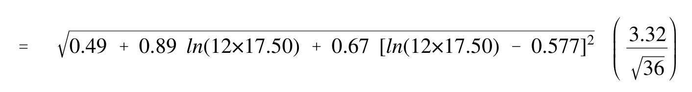 |
| 12 | II-8-12 | agreed | $$=\sqrt{0.49+0.89\times5.347+0.67\times[5.347-0.577]^2}\left(\frac{3.32}{6}\right)=\sqrt{20.49}\times0.553=2.5\,\text{m/s}$$ | 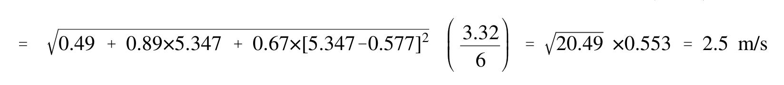 |
| 13 | II-8-13 | single_verified | $$U _ { 5 0 } \approx 8 0 \mathrm { { m p h } = 3 5 . 8 \mathrm { { m / s } \qquad ( f a s t e s t \mathrm { { m i l e } ) } } }$$ | 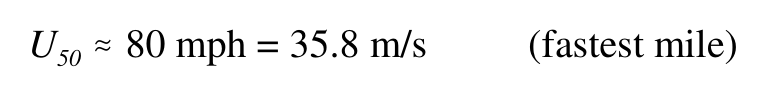 |
| 14 | II-8-14 | agreed | $$U_{25} = 0.95 \times 35.8 = 34.0 \text{ m/s}$$ | 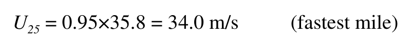 |
| 15 | II-8-15 | agreed | $$U_{25} = 0.78 \times 34.0 = 26.5 \text{ m/s}$$ | 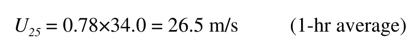 |
| 16 | II-8-16 | agreed | $$U_{50} = 0.78 \times 35.8 = 27.9 \text{ m/s}$$ | 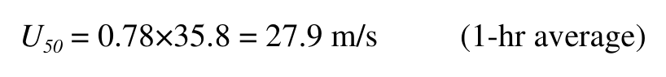 |
| 17 | II-8-17 | agreed | $$U_{25} = 1.05 \times 26.5 = 27.8 \text{ m/s}$$ | 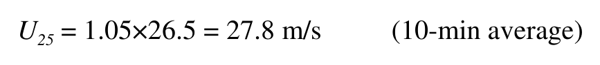 |
| 18 | II-8-18 | agreed | $$U_{50} = 1.05 \times 27.9 = 29.3 \text{ m/s}$$ | 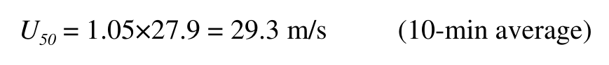 |
| 19 | II-8-19 | agreed_gt | $$H_{1} = \frac{1.517 \ H_{1/3}}{\left(1 + \frac{H_{1/3}}{d}\right)^{\frac{1}{3}}}$$ | 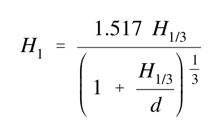 |
| 20 | II-8-20 | single_verified | $$H _ { 0 . 1 } \ = \ { \frac { 1 . 8 5 9 \ H _ { 1 / 3 } } { \left( 1 \ + \ { \frac { H _ { 1 / 3 } } { d } } \right) ^ { \frac { 1 } { 2 } } } }$$ | 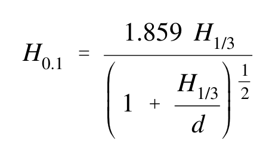 |
| 21 | II-9-6 | single_verified | $$H_s\left(\text{free long waves}\right) = K \frac{H_s^\alpha T_p^\beta}{d^\gamma}$$ | 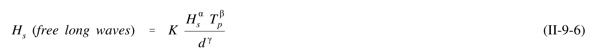 |
| 22 | II-9-7 | agreed_gt | $$H_0' = \frac{H_{sgauge}}{K_s}$$ | 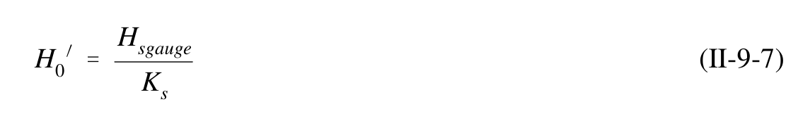 |
| 23 | II-8-23 | agreed_gt | $$\frac{1}{(4/day) \times (365 \ days/yr) \times (17 \ yr)} = 0.000040$$ | 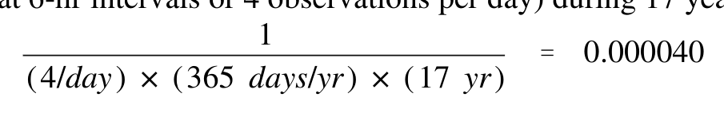 |
| 24 | II-8-24 | agreed_gt | $$\frac{1}{(4/day) \times (365 \ days/yr) \times (25 \ yr)} = 0.000027$$ | 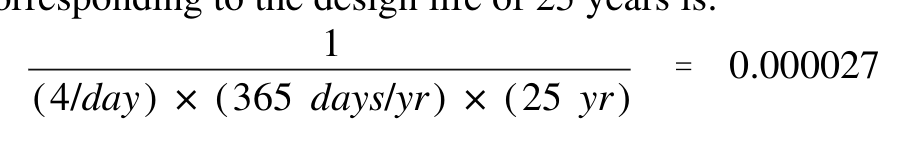 |
| 25 | II-8-8 | single_verified | $$F = \frac{V \cos \theta}{\sqrt{gd}}$$ | 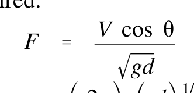 |
| 26 | II-8-26 | resolved | $$\Omega = \left(\frac{2\pi}{T}\right)\left(\frac{\sqrt{gd}}{g}\right)^{1/2}$$ | 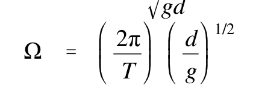 |
| 27 | II-8-27 | single_verified | $$0.025 = \left(\frac{H_0'}{L_0}\right)_{\text{max}} = \frac{2\pi H_0'}{g T_{pmin}^2}$$ | 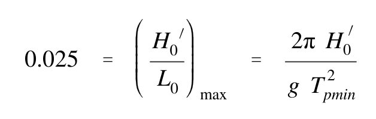 |
| 28 | II-8-28 | agreed | $$T_{p\min} = \sqrt{\frac{2\pi}{0.025g}} H_0' = 0.506 \sqrt{H_0'} \quad (H_0' \text{ in cm})$$ | 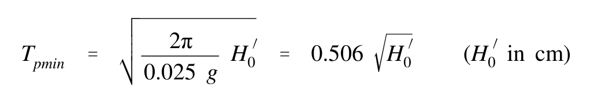 |